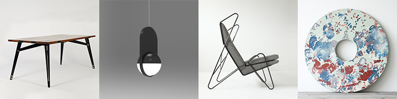

November 20
Friday 6-11
Tickets $10
Catering by Culina
Cocktails by the Volstead Act
Music by Sadeeq
The launch party is a CASH BAR

Featuring 25+ pieces from emerging and top designers
across the Canadian prairies.
All pieces exhibited are available for purchase or order.
Saturday 21 ‐ 9-5
Sunday 22 ‐ 9-5
Coffee by Iconoclast Coffee
November 25 ‐ December 19
Wednesdays 12-5
Thursdays 12-8
Fridays 12-5
Saturdays 12-5
dc3 Art Projects 10567 – 111 Street Edmonton, AB, Canada T5H 3E8
Join us for our second annual design show. We have almost 20 designers with work featured from across the Canadian Prairies. Work includes furniture, lighting, and house goods.
Featured designers include: Tomnuk | Roan Barrion | Concrete Cat | IZM | Oliver Apt. | James Hopper | Made in House | MTHARU | Loyal Loot | Adam Larson | TJ McLachlan | Britt Reed | Max Amerongen | Lea St. Arnault | Maake | One Two Six | Birch & Grey | Leasmarket | Béton Brut | Hunt Amor | Stranger Design | Daniella Thickett
Email: mail@tetejaune.com Twitter: @tetejaune_ Instagram: @tetejaune
Tête Jaune Design Show is an exhibition from and for the Canadian Prairies. We want to create a platform for designers to share their work with you, and we hope to open the discussion of what constitutes a “prairie aesthetic". We believe that our environment influences what we create, and through our work we might better understand the place we call home.
We aim to promote great work from the Canadian prairies. We also aim to be inclusive. Our design shows hold open calls for work from any part of the Canadian prairies. Please sign up for our newsletter to hear when our next call is.
Translated as ’Yellowhead’ in english, Tête Jaune was a Métis Fur Trapper who also was known as Pierre Bostonais or Pierre Hastination. He was a guide for the Hudson’s Bay Company starting in 1819. Because of his blonde hair he received the nickname Tête Jaune. As a guide he helped lead HBC expeditions through mountain passes and to and from fur caches in the Canadian Rockies. The Yellowhead pass and Tête Jaune Cache still bear his name and mark the land he helped explore. Tête Jaune and his family, along with his brother Baptiste and his family, were slain in 1828 by Beaver Indians as retaliation for territorial pressure from hunting and fur trapping in the area.
Tête Jaune’s identity is complicated. To some he was an Iroquois, or Iroquois Métis - possibly also having American heritage - living in the prairies. To some, he was seen as a white immigrant from the east. Along with other famous Métis of the Canadian Rockies - such as Jasper Haws - Tête Jaune’s legacy can be felt all across the prairies. From the Yellowhead highway that spans across Western Canada, to the many places that still use Yellowhead or Tête Jaune as their name, this man and his story have left their mark. We are inspired by his story as well as his contribution to history and we are honoured to be able to help share it in a small part.
Yvette Vinson, 90 years old and living in Hinton Alberta is a direct descendant of Tête Jaune through Louis Loyer, who in an interview stated that Tête Jaune was his grandfather. The larger Vinson family also live in the Hinton, Brule, and Grande Cache areas, and still operate small businesses as hosts and horse pack guides - like their family before them have done for many years. They are happy to see Tête Jaune honoured as a figure in Prairie and Canadian history.
Special thanks to Yvette Vinson and family from Hinton and Brule Alberta who have helped us better understand their family heritage and Tête Jaune’s story. Thanks also to the Mountain Métis Council from Grande Cache Alberta for resources and family connections.